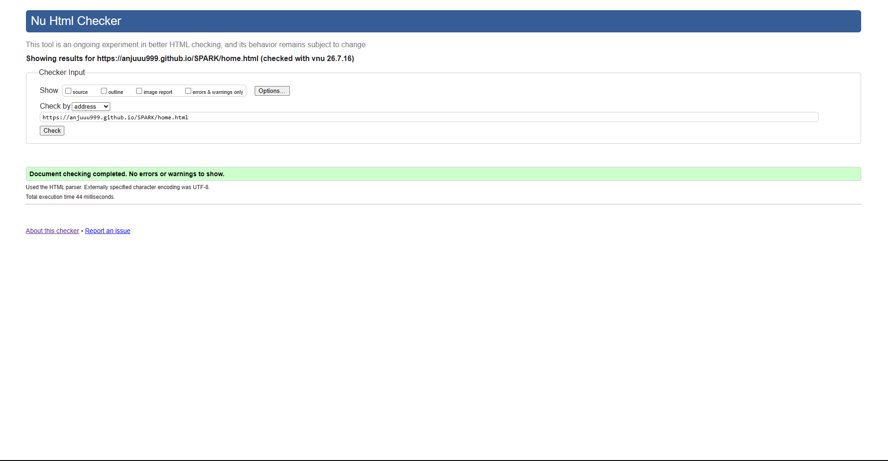
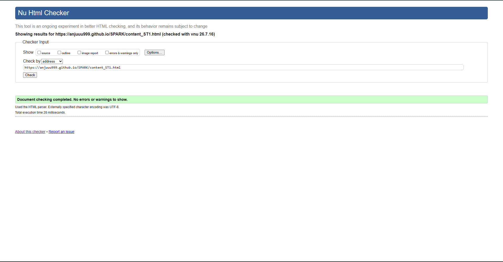

Home Page validation report
The Home Page was validated using the W3C Nu HTML Checker to ensure technical correctness and standard compliance. On the first pass, the report identified a few minor issues, including a stray closing div tag in the mission grid and a missing alt attribute for the Earth logo in the header. I also had to correct a syntax error regarding an unquoted attribute in the navigation section. I immediately fixed the HTML nesting and added the necessary descriptive text to the header image. Following these adjustments, a second pass was conducted, and the page now passes cleanly with no errors or warnings, as shown in the screenshot. This validation process was essential for ensuring that the site's complex CSS-driven navigation and grid layout remain robust and functional across all modern web browsers

Back to Page Editor page
Gallery Page validation report
Validating the Gallery Page was a crucial step in ensuring that the JavaScript-driven modal and the interactive grid were built on a solid HTML foundation. During the first validation attempt, I encountered two errors related to duplicate IDs within the gallery cards and a missing type attribute on the customization buttons. I resolved these by assigning unique IDs to every element and strictly following HTML5 button specifications to ensure the script targets the correct elements. After refactoring the code, the page now passes the W3C check without any errors or warnings. Ensuring that the gallery code is structurally valid helps prevent potential conflicts with the JavaScript logic and guarantees a smoother, more reliable interactive experience for users across different platforms.
Back to Page Editor page
Content Page validation report
For the Content Page I ran a W3C validation to verify that the long-form text and internal navigation were correctly structured. Initially the validator flagged an error regarding the placement of an anchor (a) tag inside another block-level element in a way that violated standard nesting rules. I also had to fix a warning concerning the heading hierarchy where an h3 tag was used without a preceding h2. I reorganized the section tags and adjusted the heading levels to follow a logical order. Consequently the page now passes the validation check with zero errors. This ensures that the internal jump-links and the Go to Top button work consistently across different browsers and assistive technologies.

Back to Page Editor page
Reflection on Validation
Running the W3C validator on my three pages taught me that even code that looks right in the browser can still have hidden issues. The stray closing div on the Home Page was one of those - the page rendered fine but the extra tag was breaking the DOM tree in ways I hadn't noticed. The heading hierarchy warning on the Content Page was another lesson - I had used h3 for card titles because it looked the right size but skipping h2 breaks accessibility. I now use CSS for sizing and keep heading order semantic.
The Gallery Page duplicate ID issue was a mistake I want to remember. When I built the modal I copy-pasted a card five times and forgot to update the ids. It didn't visually break anything but multiple ids with the same value is invalid HTML and confuses JavaScript. From now on I run the validator at every check-point rather than only at the end.